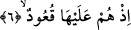
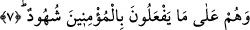

5. Ateşle dolu (hendeğe)
Bu âyette yer alan “nar/ateş” kelimesi “uhdud/kuyular” kelimesinden bedeldir. Çünkü
uhdud ateşi de içine almaktadır ve hendek ateşle korkunç, çok korku verici olmaktadır.
İfadeyi takdir edersek ifâde “en-naru fihi” şeklindedir. Veya ateş kelimesinin başındaki
“el” takısı Basra ve Kufe dilbilgisi âlimlerinin farklı görüşlerine rağmen zamir yerine
getirilmiştir.
Aynı âyette yer alan ve “çıralı” şeklinde tercüme ettiğimiz “vekûd”, kendisiyle ateş
tutuşturulan şey, yakıt demektir. Bu ifâde ateş kelimesini son derece büyük olmakla,
alevi yüksek olmakla vasfetmektedir. Ayrıca bu vasıf, ateşin içerisinde odunun ve
insanların bedenlerinin çok olması gerektiğini ifâde eden bir vasıftır. Bütün bu insanlar,
“el-vekud” kelimesine kapsamlı bir belirlilik katmaktadır. Eğer ateş kelimesi bu şekilde
tefsir edilmezse o zaman “zati’l-vekûd/çıralı” şeklinde nitelendirilmesinin hiçbir
faydası ortaya çıkmazdı. Çünkü bilinen şeylerdendir ki ateş zaten odunsuz olmaz.
6. Onlar (yakanlar) da başlarına oturmuşlar,
Bu ifâde yukarda geçen “kutile” kelimesinin zarfıdır. Âyetteki “onlar” anlamına gelen
“hum” zamiri, “hendeğin sâhipleri” yerine kullanılmıştır. “Ku‘ud” kelimesi, “kâ‘id”
kelimesinin çoğuludur. Bütün bunları göz önüne alarak âyete mânâ verecek olursak
şöyle deriz: Onlar hendeğin çevresinde yüksekçe bir yerde oturup mü’minleri ateşe atıp
yaktıklarında lânete uğramışlardı. “Alâ” harf-i cerri bu anlamı vermektedir. Söz gelimi
“merertu aleyhi” dediğimizde “ben ona yakın bir mekanda ona yukardan uğradım”
denmiş olmaktadır.
Bazı tefsir kitaplarında şöyle denilir: Bu âyet zâhirînde olduğu gibi “ateşin üzerine
oturmuşlar” şeklinde değil, “ateşin yanında sandalye ve sedirlere oturmuşlardı”
şeklindedir. Çünkü bizzat ateşin üstüne oturmuş olsalardı yanarlardı. Katiller yüksekçe
bir mekanda veya benzeri bir yerde oturuyorlar ve mü’minleri ateşe atıyorlardı. Dinini
terk edeni bırakıyor, dininde kalmakta ısrar edeni ateşe atıp yakıyorlardı.
Peygamberimiz (s.a.)’in yanında kuyulara atılan bu insanlar anıldığı zaman Efendimiz
imtihanın meşakkatinden Allah’a sığınırdı. Bu öyle bir ağır imtihandı ki ölümü bile
aratırdı. Veya bu öyle bir imtihandır ki çoluk-çocuğun çokluğu ve fakirlik gibi
imtihanlar buna tercih olunur.
7. Müminlere yapmakta oldukları işkenceyi seyrediyorlardı.